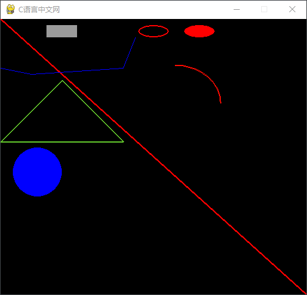

Pygame Draw绘图函数详解
Pygame 中提供了一个
表格中的函数使用方法大同小异，它们都可以在 Surface 对象上绘制一些简单的形状，返回值是一个 Rect 对象，表示实际绘制图形的矩形区域。上述绘图函数都提供了一个 color 参数，我们可以通过以下三种方式来传递 color 参数值：
下面通对上述一些方法的参数进行详细说明：
这两个都是用弧度制来表示的，而原点就是矩形 Rect 的中心位置。
如果是绘制一条消除锯齿的平滑线，此时则使用 blend = 1 参数，如下所示：
如果绘制抗锯齿直线，使用以下方法：
下面通过一组简单的示例对上述绘图方法进行演示：
draw模块用来绘制一些简单的图形状，比如矩形、多边形、圆形、直线、弧线等。pygame.draw模块的常用方法如下表所示：| 方法 | 说明 |
|---|---|
| pygame.draw.rect() | 绘制矩形 |
| pygame.draw.polygon() | 绘制多边形 |
| pygame.draw.circle() | 根据圆心和半径绘制圆形 |
| pygame.draw.ellipse() | 绘制一个椭圆形 |
| pygame.draw.arc() | 绘制弧线（挥着椭圆的一部分） |
| pygame.draw.line() | 绘制线段（直线） |
| pygame.draw.lines() | 绘制多条连续的线段 |
| pygame.draw.aaline() | 绘制一条平滑的线段（抗锯齿） |
| pygame.draw.aalines() | 绘制多条连续的线段 |
表格中的函数使用方法大同小异，它们都可以在 Surface 对象上绘制一些简单的形状，返回值是一个 Rect 对象，表示实际绘制图形的矩形区域。上述绘图函数都提供了一个 color 参数，我们可以通过以下三种方式来传递 color 参数值：
- 使用 pygame.color 对象
- RGB 三元组
- RGBA 四元组
下面通对上述一些方法的参数进行详细说明：
1) 绘制矩形
绘制矩形的语法格式如下：pygame.draw.rect(surface, color, rect, width)参数说明如下：
- surface：指主游戏窗口，无特殊情况，一般都会绘制在主屏幕上；
- color：该参数用于该图形着色；
- rect：绘制图形的位置和尺寸大小；
- width：可选参数，指定边框的宽度，默认为 0，表示填充该矩形区域。
注意，当 width > 0 时，表示线框的宽度；而 width < 0 时，此时不会绘制任何图形。
2) 绘制多边形
pygame.draw.polygon(surface, color, points, width)其中 points 一个列表参数，它表示组成多边形顶点的 3 或者多个 (x,y) 坐标，通过元组或者列表来表示这些多边形顶点。其余参数与上述函数相同。
3) 绘制圆形
pygame.circle(surface, color, pos, radius, width=0)上述参数的含义如下：
- pos：该参数用来指定的圆心位置；
- radius：用来指定圆的半径；
4) 绘制椭圆形
pygame.draw.ellipse(surface, color, Rect, width=0)绘制椭圆形的过程，其实就是在矩形区域内部（Rect）绘制一个内接椭圆形，其余参数与上述参数意思相同。
5) 绘制圆弧曲线
当需要绘制圆弧的曲线时，使用以下函数，语法格式如下：pygame.draw.arc(Surface, color, Rect, start_angle, stop_angle, width=1)与 ellipse 函数相比，该函数多了两个参数：
- start_angle是该段圆弧的起始角度；
- stop_angle是终止角度；
这两个都是用弧度制来表示的，而原点就是矩形 Rect 的中心位置。
6) 绘制直线
Draw 模块提供了两类绘制直线的方法，即是否消除直线的锯齿，并且根据实际情况，我们还可以选择绘制一条或者多条直线。pygame.draw.line(surface, color, start_pos, end_pos, width=1)参数说明：
- start_pos 和 end_pos 表示线段的起始位置，此处使用 [x,y] 来表示起始位置；
- width =1 表示直线的宽度，默认为 1。
如果是绘制一条消除锯齿的平滑线，此时则使用 blend = 1 参数，如下所示：
pygame.aaline(surface, color, startpos, endpos, blend=1)blend 参数表示通过绘制混合背景的阴影来实现抗锯齿功能。
7) 绘制多条直接
当需要绘制多条直线的时候，我们可以使用以下方法：pygame.lines(surface, color, closed, pointlist, width=1)其中 pointlist 与 closed 含义如下：
- pointlist：参数值为列表，包含了一些列点坐标的列表
- closed：布尔值参数，如果设置为 True，表示直线的第一个端点和直线的最后一个端点要首尾相连；
如果绘制抗锯齿直线，使用以下方法：
pygame.draw.aalines(surface, color, closed, pointlist, blend=1)除了指定了 blend = 1 之外，其余参数含义与上述函数相同。
下面通过一组简单的示例对上述绘图方法进行演示：
import pygame
from math import pi
#初始化
pygame.init()
# 设置主屏幕大小
size = (500, 450)
screen = pygame.display.set_mode(size)
#设置标题
pygame.display.set_caption("C语言中文网")
# 设置一个控制主循环的变量
done = False
#创建时钟对象
clock = pygame.time.Clock()
while not done:
# 设置游戏的fps
clock.tick(10)
for event in pygame.event.get():
if event.type == pygame.QUIT:
done = True # 若检测到关闭窗口，则将done置为True
# 绘制一条宽度为 3 的红色对角线
pygame.draw.line(screen, (0, 255, 0), [0, 0], (500, 450), 3)
# 绘制多条蓝色的直线（连续直线，非抗锯齿），False 表示首尾不相连
pygame.draw.lines(screen, (0, 0, 255), False, [[0, 80], [50, 90], [200, 80], [220, 30]], 1)
# 绘制一个灰色的矩形区域，以灰色填充区域
pygame.draw.rect(screen, (155, 155, 155), (75, 10, 50, 20), 0)
# 绘制一个线框宽度为2的矩形区域
pygame.draw.rect(screen, (0, 0, 0), [150, 10, 50, 20],2)
# 绘制一个椭圆形,其线宽为2
pygame.draw.ellipse(screen, (255, 0, 0), (225, 10, 50, 20), 2)
# 绘制一个实心的红色椭圆形
pygame.draw.ellipse(screen, (255, 0, 0), (300, 10, 50, 20))
# 绘制一个绿色边框(宽度为2)三角形
pygame.draw.polygon(screen, (100, 200, 45), [[100, 100], [0, 200], [200, 200]], 2)
# 绘制一个蓝色实心的圆形，其中[60,250]表示圆心的位置，40为半径，width默认为0
pygame.draw.circle(screen, (0, 0, 255), [60, 250], 40)
# 绘制一个圆弧,其中0表示弧线的开始位置，pi/2表示弧线的结束位置，2表示线宽
pygame.draw.arc(screen, (255, 10, 0), (210, 75, 150, 125), 0, pi / 2, 2)
# 刷新显示屏幕
pygame.display.flip()
# 点击关闭，退出pygame程序
pygame.quit()
程序的运行结果如下所示：

图1：Pygame绘图函数用法
图1：Pygame绘图函数用法
关注公众号「站长严长生」，在手机上阅读所有教程，随时随地都能学习。内含一款搜索神器，免费下载全网书籍和视频。

微信扫码关注公众号